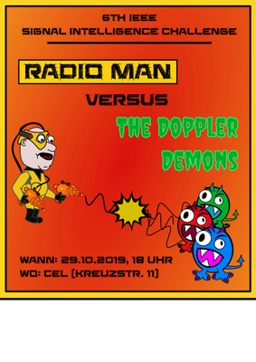

Auch dieses Jahr findet wieder die nun mittlerweile sechste IEEE Signal Intelligence Challenge statt!
Das diesjährige Motto lautet "Radio Man versus the Doppler Demons".
Zur Hintergrundstory: Peter Barker arbeitete als Nachrichtentechnik-Ingenieur an Radarsystemen, bis er eines Tages in die erste Fresnelzone seines Deep-Space-Radars geriet, woraufhin er sich in Folge einer spontanen Mutation in "Radio Man" verwandelte. Seither verteidigt er die elektromagnetische Dimension gegen die zerstörerischen Absichten böser Kanäle. Seine Erzfeinde, die hinterlistigen Spektralbarone Ray Leigh und R. Ice, haben nun ihre gefährlichsten Vasallen, die Doppler Demons, entsandt, um Radio Man den Garaus zu machen. Glücklicherweise sind die Dämonen zwar schnell, aber nicht sehr schlau, weshalb bei genauem Hinhören immer wieder Gespräche zwischen den Dreien aufgeschnappt werden können, die möglicherweise ihre Schwachstellen offenbaren!
Schlüpft in die Rolle des Radio-Man, entschlüsselt die Nachrichten und verteidigt den Äther! Es winken wie immer tolle Preise (Details zu Sponsoren folgen noch)! Alle Infos gibt es gesammelt und laufend aktualisiert wie immer hier.
Das Kick-Off-Event wird am 29.10.2019 um 19 Uhr im Dachgeschoss des Instituts für Nachrichtentechnik (CEL) in der Kreuzstraße 11 stattfinden. Wir werden euch eine kurze Einführung in die Challenge und in mögliche Tools geben. Auch Team-Finding ist an diesem Tag explizit möglich und gewünscht, ihr müsst also nicht schon ein Team haben, wenn ihr zum Kick-Off kommt!
{kind=link}
{kind=link}
{kind=link}
{kind=link}